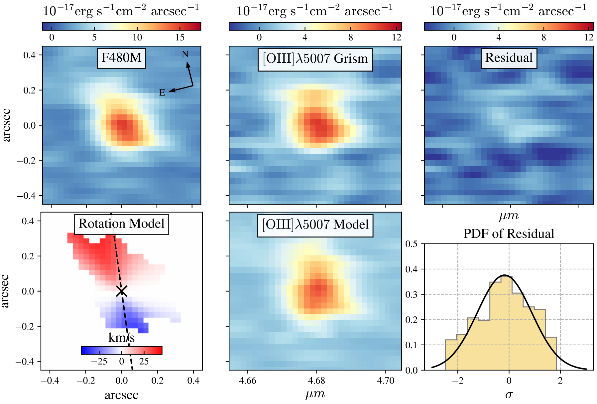

MAGNIF: A Tentative Lensed Rotating Disk at z=8.34 detected by JWST NIRCam WFSS with Dynamical Forward Modeling
Li, Cai, Sun, et al. (2023)
link to this paper: https://ui.adsabs.harvard.edu/abs/2023arXiv231009327L/abstract
We report galaxy MACS0416-Y3 behind the lensing cluster MACSJ0416.1--2403 as a tentative rotating disk at $z=8.34$ detected through its [Oiii]$_{\lambda5007}$ emission in JWST NIRCam wide-field slitless spectroscopic observations. The discovery is based on our new grism dynamical modeling methodology for JWST NIRCam slitless spectroscopy, using the data from "Median-band Astrophysics with the Grism of NIRCam in Frontier Fields" (MAGNIF), a JWST Cycle-2 program. The [Oiii]$_{\lambda5007}$ emission line morphology in grism data shows velocity offsets compared to the F480M direct imaging, suggestive of rotation. Assuming a geometrically thin disk model, we constrain the rotation velocity of $v_{\rm rot}=58^{+53}_{-35}$ km s$^{-1}$ via forward modeling of the two-dimensional (2D) spectrum. We obtain the kinematic ratio of $v_{\rm rot}/\sigma_v=1.6^{+1.9}_{-0.9}$, where $\sigma_v$ is the velocity dispersion, in line with a quasi-stable thin disk. The resulting dynamical mass is estimated to be $\log(M_{\rm dyn}/M_{\odot})=8.4^{+0.5}_{-0.7}$. If the rotation confirmed, our discovery suggests that rotating gaseous disks may have already existed within 600 million years after Big Bang.
